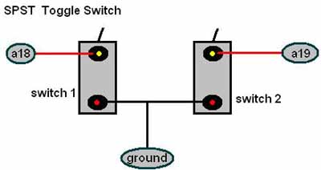

SELECTING
TSOP BANK FOR XBOX 1.0
The TSOP in the V1.0 xbox has four banks, it is a 1MB Bios. Here
is how to select between all four of those banks with two switches.
BACK OF MAIN-BOARD
The switch leads will on back of the motherboard on solder points a18 and a19
and to any one of the ground points:

When both switches off (no switches are grounded) the Xbox reads the
4th quad of the bios, bios 4, by default.
Switch 1 = a(18)
Switch 2 = a(19)
*ON MEANS GROUNDED*
|
Switch
|
Position
|
Bios booted
|
|
1 and 2
|
ON
|
1st
|
|
2
|
ON
|
2nd
|
|
1
|
ON
|
3rd
|
|
Either 1 or 2
|
OFF
|
4th(default)
|
Switch on
A18 -> OFF= boots 4th bios ; Switch ON =
boots 3rd bios.
Switch on A19 -> switch OFF = boots 4th bios ;
Switch ON = boots 2nd bios.
Switch on A18 and A19 -> both switches OFF= boots
4th bios ; both switches ON boots 1st bios ;
combination of one off and one on yields the above results.
When flashing
the TSOP make sure that both switches are OFF (NOT
GROUNDED). IF they’re not, the TSOP flashing will fail because the TSOP
cannot be wholly reached, SO MAKE SURE THE SWITCHES ARE OFF!!!
The bios has to be flashed WHOLE, as a 1MB bios, so you would have to
combine the FOUR 256K files into one file. You can do it from a dos
prompt, something like this: copy /b
EVOX 25.bin+x2 4973.bin+x2 4972.bin+Original 4034.bin Multi Bios.bin
After doing this you have a multi bios. Next you boot up
EVOX, ftp the Multi Bios, turn all switches OFF, and
flash!!
MultiBios.bin is the
combined file of all four files copied into it.
Flashing the TSOP is risky all the time, so fi you do not know what you
are doing, then do not attempt it. ALSO, the TSOP must be WRITE
ENABLED. How to do that is also at this site.